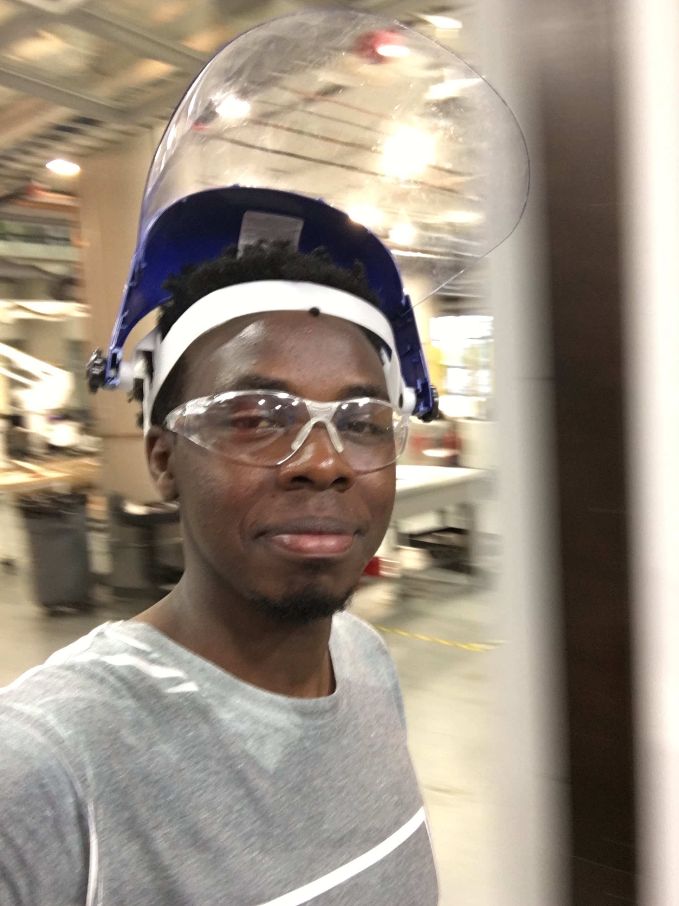
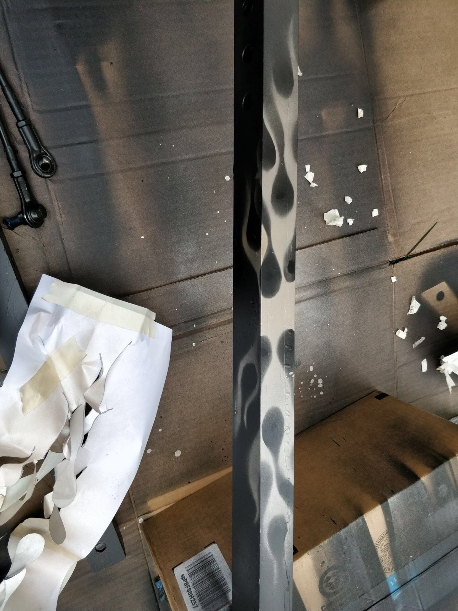
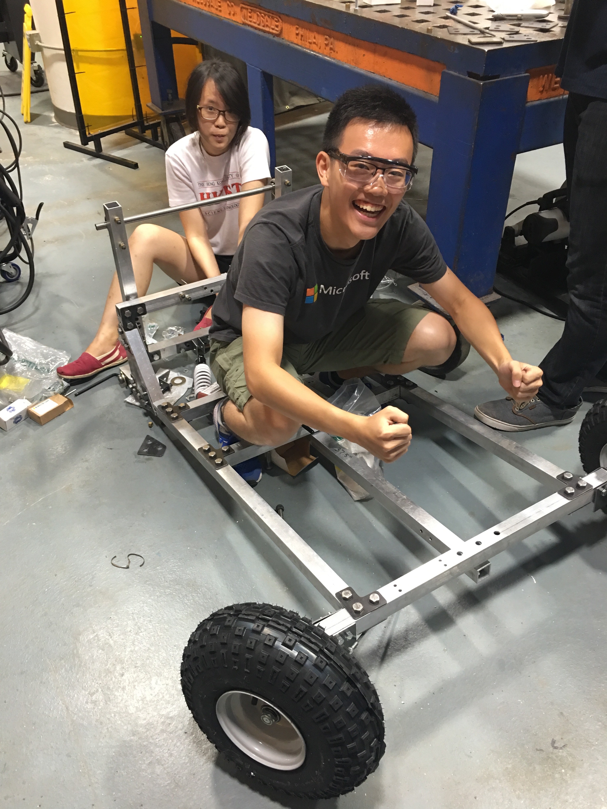
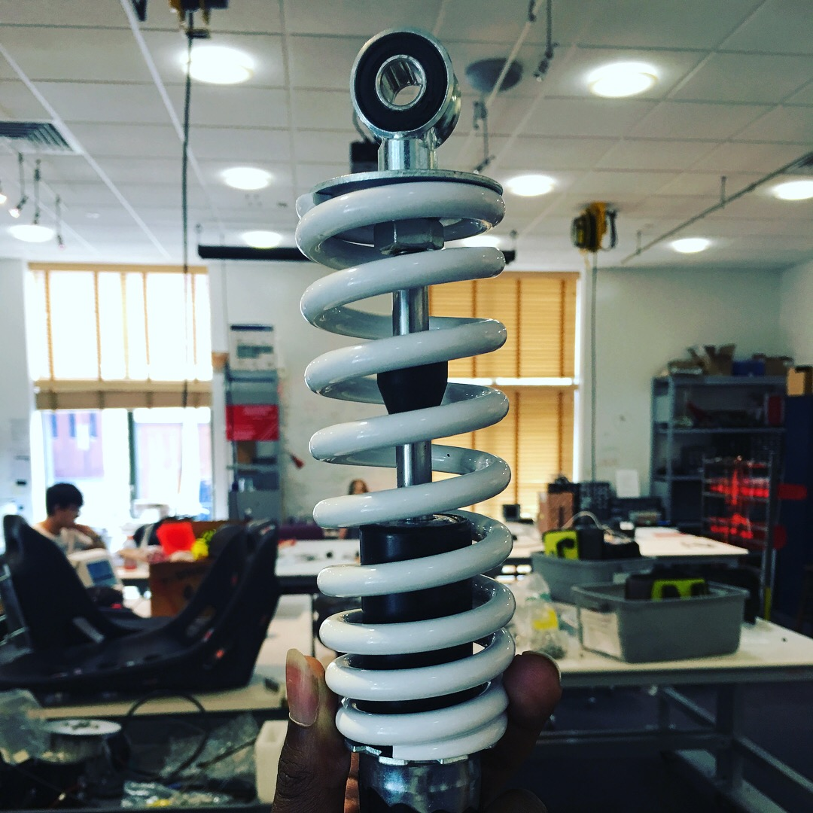
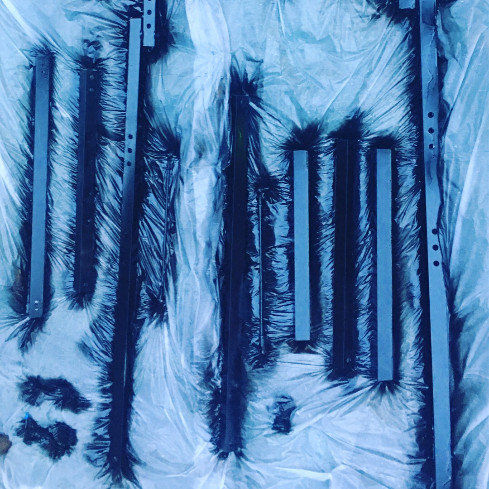
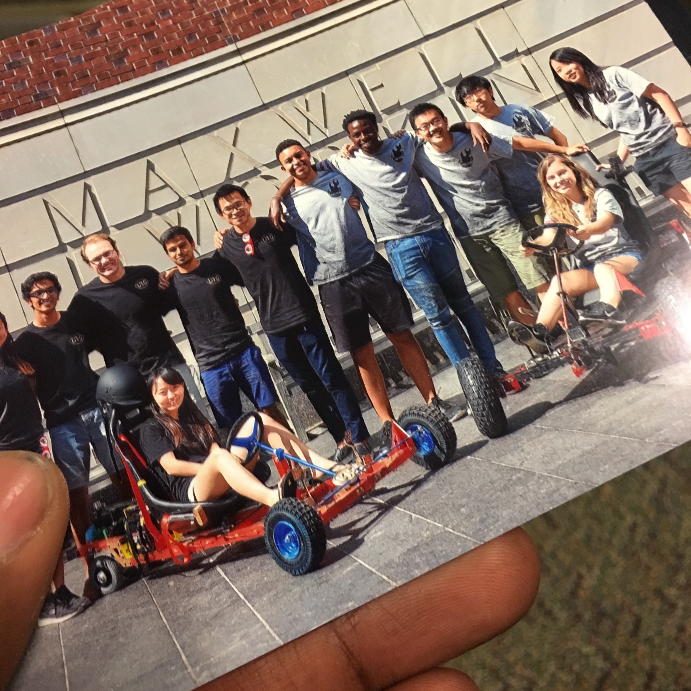

Description: Collobarative project between Harvard and Hong Kong Unversity of Science and Technology.
Date: June 2017 - July 2017
Program : Harvard X HKUST International Design experience
Location: Hong Kong and Harvard
Software, Tools, Equipment: Arduino, Autodesk build space machine shop tools
Team members and contributers: Billy Koech, Ashlyn Fraham, Bryant Huggins, Emily Wu, Adrian Chow



Introduction
The program requested participants of the Harvard X HKUST International Design Experience to design and construct a Personal Electric Vehicle(PEV) within the budget of USD 1500 and within the time constraint of 7 weeks that satisfies the following requirements:
- Consume the least amount of energy without compromising functionality.
- Meet the minimum safety requirements for the driver
- Should comfortably fit every team member individually.
Members of the team came up with the following problem statement: Considering desired functions, it is critical that the PEV should be safe, stable and energy efficient and it should be manufacturable within the seven weeks’ time constraint.



Team Cardi went through a process of alternative analysis to conceptualized the design of the PEV. The design of the PEV was then divided into the following parts in order for the concept to be realized:
- Chassis
- Suspension
- Steering
- Transmission
- Braking
- Electrical System and Software
Parts that I was in charge of:
Below are the parts that I contributed to. It's writted in layman terms to accommodate a general audience. More details and specifics on the design can be found below in the design section.
1. Collaboration on the design of the transmission
The design of the transmission involved the modification of the a bicycle derailleur so as to leverage it’s multi-speed functionality and it’s ease of implementation. The derailleur in this case gave the gives the PEV up to 7 speeds.
2. Brake pedals design
The design of the pedals was driven by the following requirements:
- The user experience when pressing on the pedal
- Sufficient mechanical resistance to provide tactile feedback when stepping on the pedal
- Short amount of time for the pedal to return to the unengaged position.
The design arrived at after iteration involved mounting the pedal on a U bracket through a hole on one side of the pedal. Another hole was drilled on the other side of the U bracket for the purpose of attaching a potentiometer.
3. Brake assembly
Designed mount for the brake disc and sourced parts for the brake assembly. Designed mount for brake assembly.
4. Machine shop experience
Machining parts from steel and aluminum using band saws, hand drills, bench drills, hammers and pipe cutters.